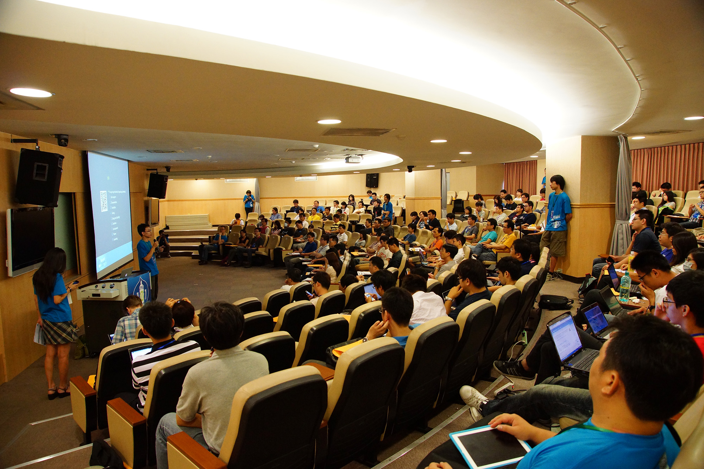
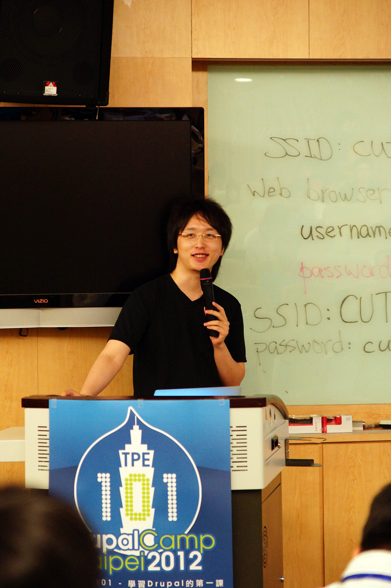
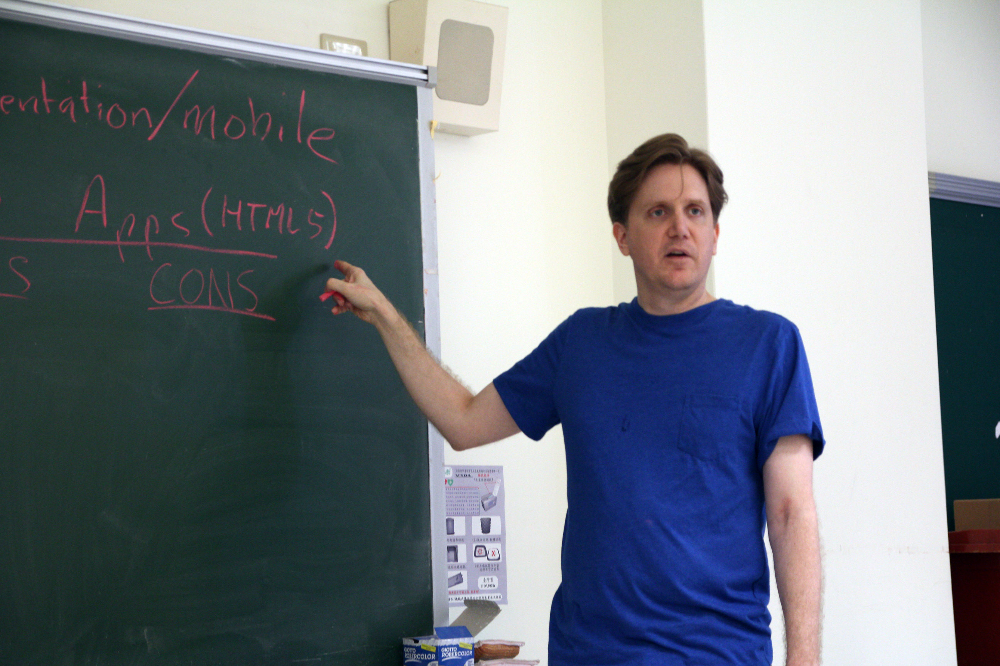
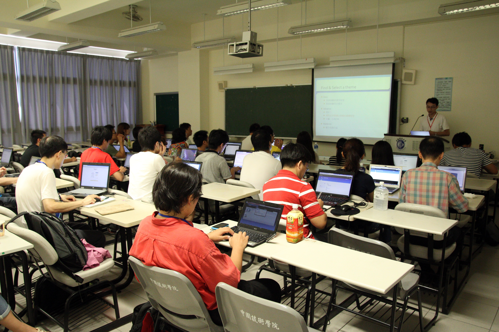

也紀念我們永遠的朋友 李士傑先生（Shih-Chieh Ilya Li）。
DrupalCamp 2012 大會 揭露行動網站製作新技術
台灣 DrupalCamp 2012 大會於 8 日圓滿落幕，今年大會於中國科技大學台北校區舉辦，為期兩天共 131 人參與，並有來自菲律賓、丹麥的外籍友人遠道前來。第一天涵蓋基礎教學、趨勢、行動應用、顧客關係、法律知識等主題演講；第二天則為全日實戰工作坊，分成行動裝置應用、版型基礎開發、購物網站架設三線進行。
▲ 圖1︰第一日的活動涵蓋基礎教學、趨勢、行動應用、顧客關係、法律知識等專題演講。
首日活動請到資深自由軟體工作者唐鳳，分享「EtherCalc for Drupal : 多人即時協作試算表」開發過程，展現 Drupal 模組強大的威力。想要擁有類似 Google Docs 的多人即時共同編輯功能？不需要自行開發，只要用 Drupal 架設即可。
▲ 圖2︰資深自由軟體工作者唐鳳，分享 Drupal 製作多人即時協作試算表的威力。
第二日的實戰工作坊，則有身為 Drupal Top 30 核心貢獻者的 John Albin Wilkins，講解如何以 Drupal 架設適合行動裝置的「自適應網頁 (Responsive Web)」網站。Responsive Web 為目前當紅網頁技術，只要設計一份網頁版型，就可適用電腦、平板、手機等不同尺寸的螢幕。
▲ 圖3︰身為 Drupal Top 30 核心貢獻者的 John Albin Wilkins，在第二天的實戰工作坊親自講解如何以 Drupal 架設適合行動裝置的網站。
John Albin Wilkins 也是 Drupal 8 行動裝置應用的專案主持人，他所開發的 Zen（禪）版型蟬聯 Drupal.org 版型下載第一名。最新版更向下相容於 IE6 舊版網頁瀏覽器，讓使用舊電腦的使用者，也能正常瀏覽新技術製作出來的網站。
▲ 圖4︰第二日的版型基礎開發工作坊，非常受到社群成員的歡迎，報名人數額滿。
DrupalCamp 自 2010 年首度在台灣舉辦以來，今年已是第三屆，為了擴展 Drupal 社群版圖，大會並宣佈將在下半年，前往台灣南部舉辦大型聚會，希望能凝聚南台灣的社群力量。提到為何這麼積極舉辦 Drupal 聚會？ 第一屆 DrupalCamp Taipei 發起人 Jenny Wilkins 表示，為的就是吸引 Drupal 官方的注目，期待有一天能讓國際性的 DrupalCon 大會在台灣舉辦，讓國際間的 Drupal 好手前來台灣，為台灣社群注入更多創新與活力。
關於 Drupal
Drupal 是一套開放源碼的內容管理平台（Content Management System, CMS），擁有多種實用的功能，可以用來建置從個人網誌到大型網路社群等，各種類型的網站。白宮、華納唱片、紐約觀察報、富比士、哈佛大學等網站均是以 Drupal 架設。
關於 DrupalCamp
DrupalCamp 是全球 Drupal 社群中，由當地社群自發舉辦的大型聚會，統稱 DrupalCamp。隨著全球 Drupaler 的足跡，每當有城市舉辦 DrupalCamp 時，其實就是該地方的網路趨勢大會。除了 Drupal 使用者之外，各種網路相關行業也會參與互相交流，許多創意和合作機會都在大會上密集發生。台灣的 DrupalCamp 從 2010 年開始舉辦，今年為第三屆。
新聞聯絡人:
Drupal Taiwan 公關 蔡婉如 Judy judy720107 AT gmail.com
您也許有興趣閱讀以下文章:
- DrupalCamp Taipei 2014 活動訊息 - 2014-07-30
- Open to everything! DrupalCamp Taipei 2013 - 2013-06-25
- DrupalCamp Taipei 2012 提供 [教師研習時數認證] - 2012-06-28
- DrupalCamp Taipei 2012 研討會--學習 Drupal 的第一課，初學者的您更是不容錯過！ - 2012-06-12
- DrupalCamp Taipei 2011 總召 Jenny 會後專訪 - 2011-08-05
- DrupalCamp Taipei 2011 已開放報名 - 2011-06-13
專欄總覽


E-Mail：contact@openfoundry.org Address：台北市南港區研究院路2段128號 中央研究院資訊科學研究所 . 隱私權條款. 使用條款

評論
开始对drupal有兴趣了，
原来drupal可以做到这么多 东西。